2 Analysing learner speech in multimodal learner corpora
In this session, we will focus on vowel production and learn how to analyze vowels using Praat. What you learn today can be applied to analyze learner speech using multimodal corpora such as The International Corpus Network of Asian Learners of English (ICNALE) and allows you to examine differences in vowel production between learners and L1 speakers. Comparing learner speech to that of target speakers can enhance intelligibility and listeners’ perceptions (cf. Munro and Derwing 1995; Kang, Thomson, and Moran 2018).
Session plan
00:00–00:05 Welcome, review of last session
00:05-00:10 Discussion: how does speech differ from text
00:10-00:20 Basic concepts of speech analysis (features, formants, spectrogram)
00:20-00:30 Showcasing the activity we will do together
00:30 – 01:00 Group work: students use WebMAUS Basic for alignment
01:00 - 01:10 In-class reflection about task and discussion of next step
01:10 - 1:15 Showcasing on how to extract formants
01:15-01:25 Group work: students work on formant extraction
01:25-01:30 Reflection, summary, and outlook
Recap of last session
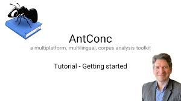
Last session, we explored AnConc and and MS Excel and we used these tools to analyse swear words in Irish English. The session familiarized you with the most commonly used corpus tool and it showcased the workflow of a corpus study.
As a homework, you were supposed to record yourselves in Praat producing the following words: heed, hid, head, had, hod, hawed, hood, whod (each three times).
See this tutorial on how to record yourselves in Praat.
Activating discussion
DISCUSSION TIME
How does speech affect the perception of the speaker by listeners?
How is speech in this respect different from text?
How is speech different from text?
Speech is
…
Text is
…
Working with text and speech
When we analyse text, we focus on tokens (~ words) or sequences of tokens and then compare the frequency of tokens or patterns in one corpus to their use in another corpus.
When analyzing speech, we do not focus on tokens but rather on features of speech sounds and compare these features across sounds and groups of speakers.
The procedures also differ (but also show commonalities):
Text: finding a corpus : processing the corpus using corpus software (AntConc | R): analyzing information (Excel | R)
Speech: finding/recording audio data : alignment + segmentation (WebMAUS Basic) : extracting speech features (Praat | ?R) : analyzing information (Excel | R)
QUESTION TIME
What is segmentation and alignment and why is it necessary when analyzing speech sounds?
Features of vowel sounds (in English)
In this course, we cannot go into detail as speech is very diverse and versatile. Therefore, we will focus only on analyzing vowel sounds.
QUESTION TIME
What differentiates the vowel sounds in heed, hid, hood, and who’d?
Do we need a tongue to produce vowel sounds?
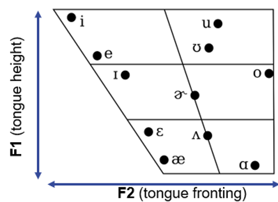
In English, vowel sounds differ in:
Length: /iː/ and /ɪ/ differ mostly in length: compare heed and hid
Tongue position (formants): /iː/ and /uː/ differ mostly in tongue position: when we produce /iː/, our tongue is raised to the front of our mouth while the tongue is raised to the back of our mouth when we produce /uː/
What are formants?
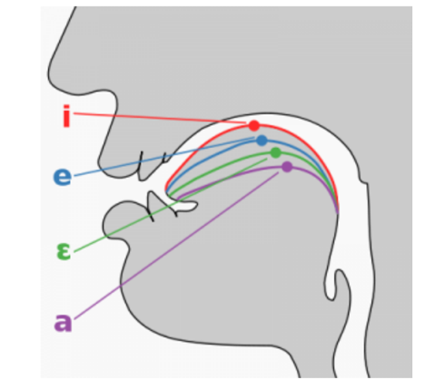
What are formants and do they have to do with tongue position?
Formants are concentration of acoustic energy at a certain frequency that show up in so called spectrograms.
First formants (F1) inversely correspond to the tongue height
Second formants (F2) and inversely correspond to tongue fronting
We can use the software Praat to extract features of speech from audio data.
What do the formants of vowel sounds “look like”?
Let’s have a look at some spectrograms of vowels. Try to understand what they are showing and compare them:
- Can you see differences?
- Are some sounds longer than others?
- What would you see if there were diphthongs?
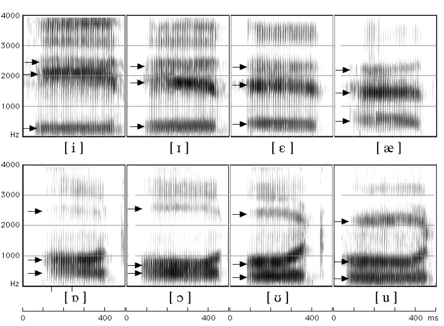
Today’s task
Today, we will perform a case study on extracting vowel features using WebMAUS Basic, Praat, and Excel.
The case study will show
how we use WebMaus Basic to force align (segmentation and alignment) the transcript to audio data and to generate TextGrids
We use Praat to correct the force alignment and to extract formant frequencies
We use Excel to analyse and visualize the resulting data in a vowel chart
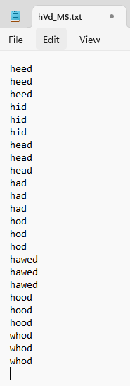
1. First, open the folder with your recordings of the prompts.
IMPORTANT - THIS WOULD HAVE BEEN HOMEWORK!
For the homework, students would have been asked
to record themselves in Praat producing the prompt words (shown below).
As a result, every student would have two files:
1. a txt-file with the prompt words and
2. a wav-file with the recording of the prompt words.
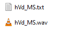
Let’s explore the spectrograms of the recordings together!
Make sure that the recording has the same name as the prompt words (in my case they are called “hVd_MS.txt” and “hVd_MS.wav”)
Go to WebMAUS Basic
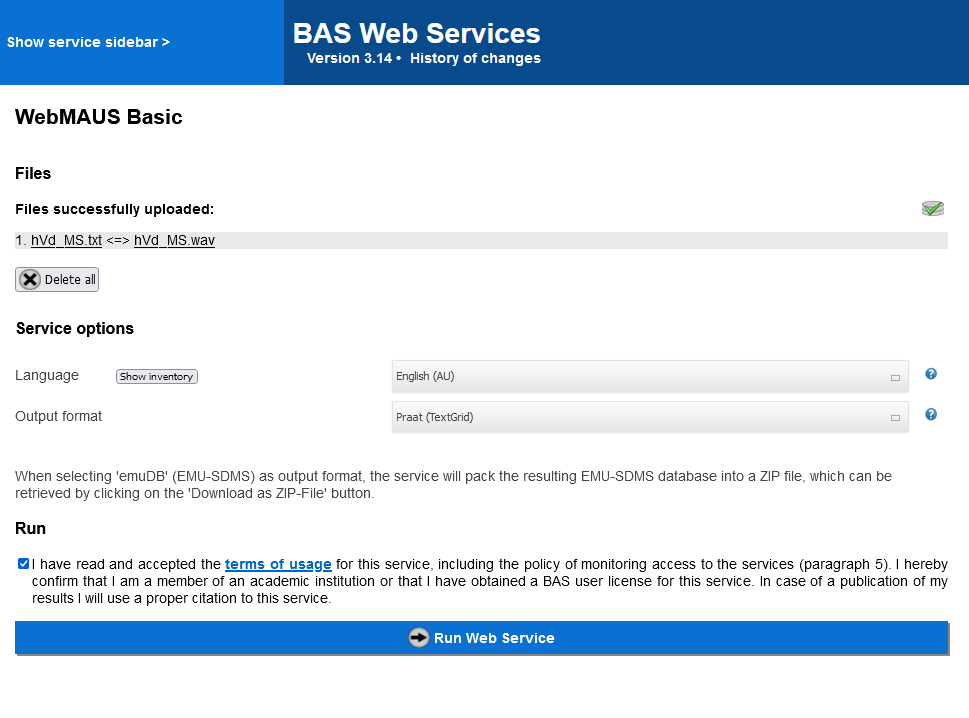
- Select English (any of the models, US, AU, GB, etc., will work) as your Language
- Drag-n-drop your txt- and wav-file into the Files box
- Check the box next to “I have read and accepted the terms of usage for this service…”
- Click on “Upload”
- Click on “Run Web Service” (you may need to scroll down)
- Download the resulting TextGrid-file as a zip-file (as suggested). Then, unzip the file once it has downloaded and then save the resulting TextGrid-file together with our txt and wav-files.
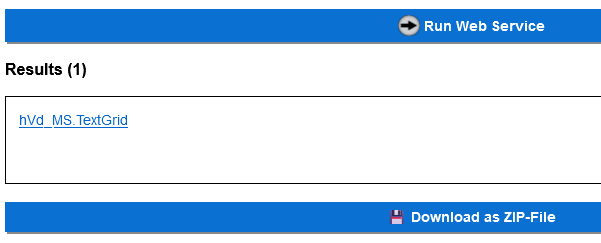
- Open Praat, click on “Open”, then on “Read from file” and load the wav-file and the TextGrid-file into Praat.
- Highlight both files (the txt and the wav) (you can use ctrl + A for this)
- Click “View & edit” (a new window like the one below should open).
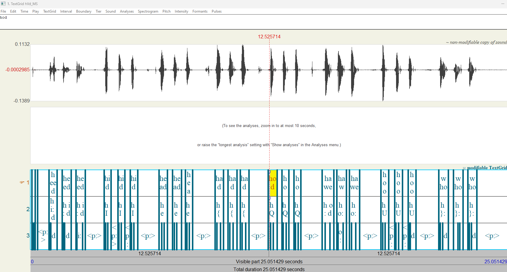
6. Now zoom in (it’s in the lower left corner) and scroll to the beginning until the Praat looks something like below (it’s important that you can see the sound features in a detail without zooming in too much).
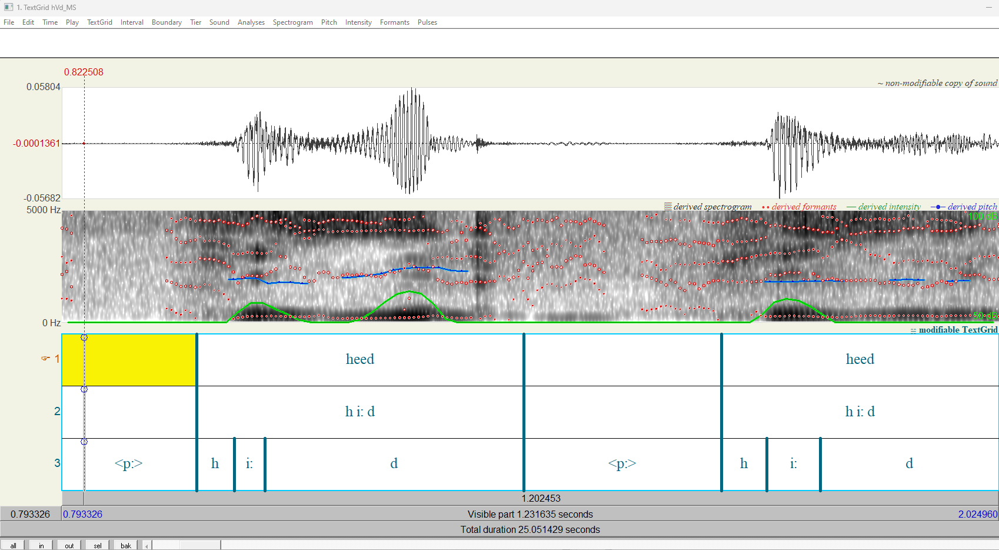
DISCUSSION TIME
What do you see?
Are there issues with the alignment?
HINT
Select a range in the upper window and, to listen to that segment, click on the row with the duration of the segment (0.430792) in the picture below.
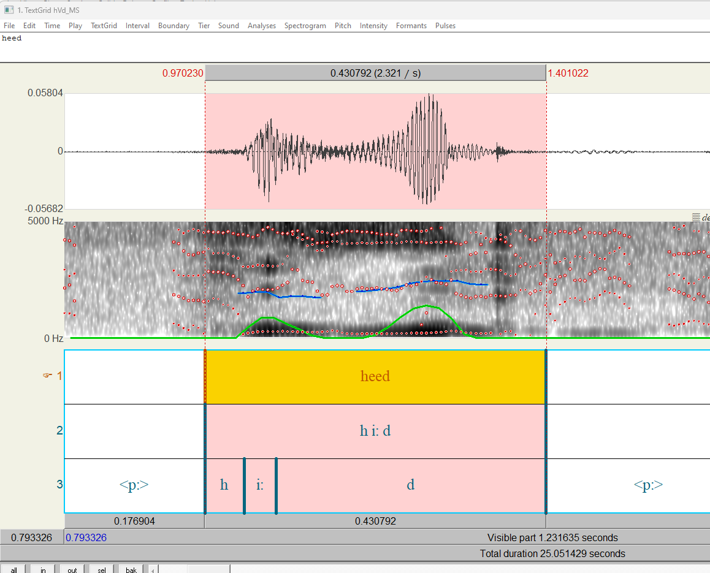
In tier 3 (the lowest tier), click into a sound and then click on the timing row (right below tier 3) to listen to a sound.
As the segmentation of many vowel sounds is a bit inaccurate, click and hold to move the borders/edges of sounds to better match the “real” beginnings and ends of vowel sounds (click into the sound and listen if the segmentation has improved).
In “File” (top right), select “Save whole TextGrid as txt file” to save an updated version of your TextGrid (give it a new name so as to not overwrite the existing raw TextGrid).
Once the segmentation is accurate, go back to the beginning and click into the first vowel sound this should be the /iː/ of the first instance of heed.
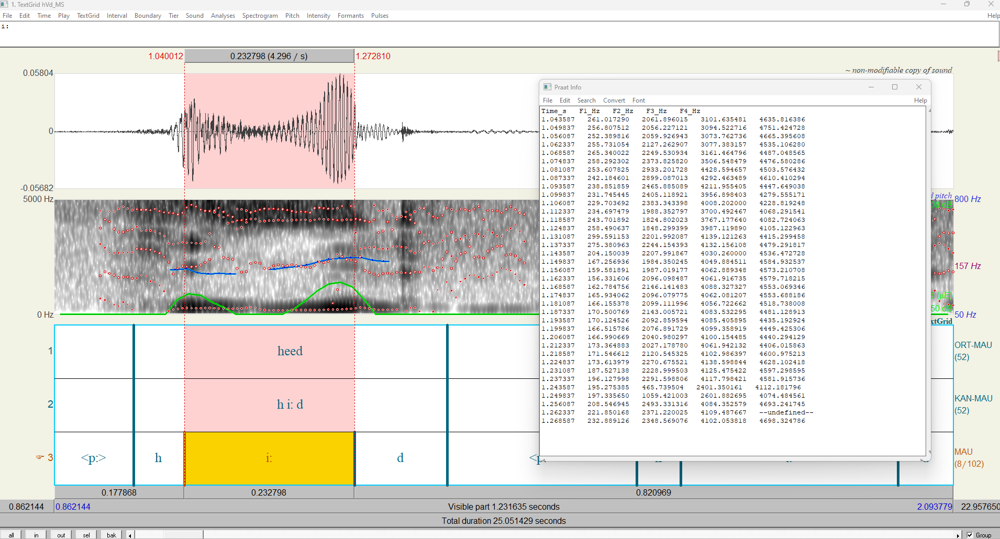
Once the sound is selected and highlighted in yellow, click on “Formants” in the top ribbon and then click on “Formant listing” under “Query formants”). A table will appear. Highlight and then copy and paste the content of the table into an editor program like TextPad or NotePad++ that allow you to use regular expressions.
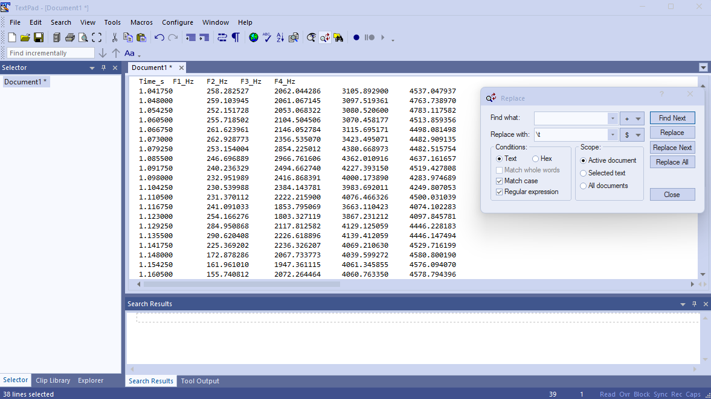
- In that editor, replace 3 white spaces with a tab ( and then paste the result into MS Excel. Add three additional columns:
id: which should be a running number from 1 to the end of the entire table (this entire table should include all other formant tables that you extract);
word: in which you fill in the word in which the vowel sound occurred, e.g. heed or hid;
trial: which should be either 1, 2, or 3 depending on which version of the word the sound appeared in.
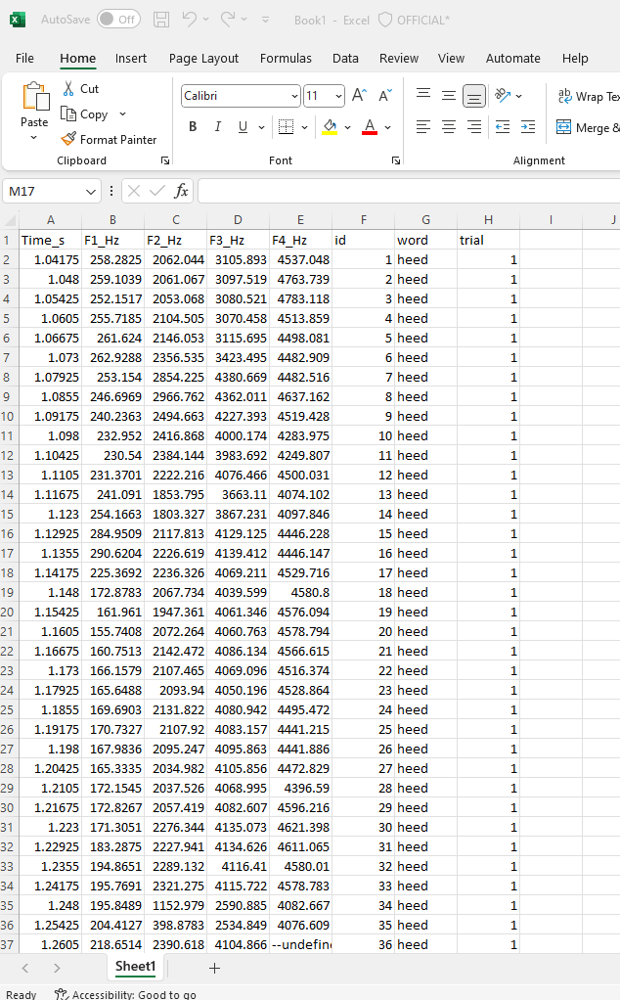
- Repeat steps 12 and 13 for all vowels in the sound file. At the end you should have a table with formant frequencies of all vowels in the sound file.
Summary and keypoints
In this session, you have learned about basic concepts relevant to analyzing speech (e.g., spectrogram, fetaures, formants) and learned how to analyse vowels combining WebMUAS Basic and Praat. The steps of the analysis can be transferred to answer a wide range of research questions. In addition, students were encouraged to critically reflect upon differences of text and speech and what role speech plays in social interactions.
Homework
- Students finish extracting their vowel formants.
- Watch tutorial on how to visualize the formats in a vowel chart.
- Students regenerate their own vowel chart
Next session
Start of next session: students present their vowel charts and discuss difficulties and what they found out about their speech.